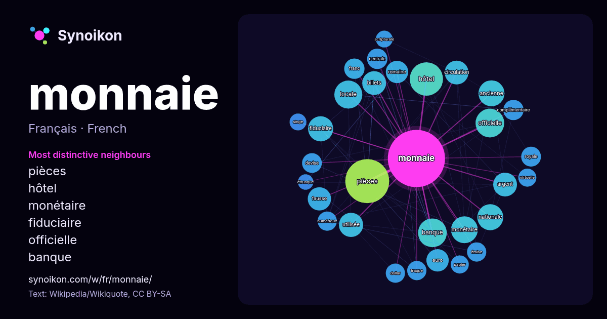

Français · mot populaire
monnaie
“currency” · Les mots trouvés autour de lui dans 1357 occurrences issues de Wikipédia, Wikiquote.

Voisins les plus spécifiques
- pièces 58×
- hôtel 42×
- monétaire 32×
- fiduciaire 30×
- officielle 28×
- banque 28×
- billets 25×
- argent 25×
- fausse 25×
- circulation 22×
- euro 22×
- locale 22×
- complémentaire 19×
- utilisée 19×
- romaine 19×
- émise 18×
- devise 18×
- ancienne 17×
- frappe 16×
- franc 16×
× = combien de fois plus souvent que dans le texte général de Wikipédia.
Voisins les plus fréquents
- pièces 89
- hôtel 51
- banque 38
- officielle 38
- locale 36
- monétaire 33
- pays 32
- ancienne 31
- nationale 31
- fiduciaire 29
- rue 28
- utilisée 27
- argent 26
- billets 26
- circulation 26
- fausse 25
- commune 24
- euro 23
- romaine 23
- nom 22
En contexte
- associant ces informations à des références à l'aide d'appels de notes. Monnaie La monnaie ou l'argent est définie par trois fonctions : c'est une unité de compte Wikipedia snippets · Monnaie
- de monnaie pour une valeur totale de 34 390 611 732 €, l'ensemble représentant la somme de 1 601 299 388 567 €, ce qui en fait la première monnaie en Wikipedia snippets · Euro
- articles homonymes, voir Monnaie (homonymie). Théâtre royal de la Monnaie Le théâtre royal de la Monnaie. Le théâtre royal de la Monnaie (en néerlandais : Koninklijke Wikipedia snippets · La Monnaie
- (1684-1782). La numismatique (du latin numisma, « pièce de monnaie ») a pour objet l'étude des monnaies et médailles. Considérée comme une science auxiliaire Wikipedia snippets · Numismatique
- circulation. La monnaie numérique peut être émise par des institutions financières (monnaie électronique) ou par des entités privées (crypto-monnaies).[Information douteuse] Wikipedia snippets · Monnaie électronique
- transactions et la première en quantité de monnaie en circulation. En monnaie scripturale, le dollar est : la principale monnaie de réserve utilisée dans le monde Wikipedia snippets · Dollar américain
- comme monnaie, repose sur un principe de garantie défendu par une institution centralisatrice. Article connexe : Histoire de la monnaie. La monnaie fiduciaire Wikipedia snippets · Monnaie fiduciaire
- Pour les articles homonymes, voir Monnaie (homonymie). La Monnaie de Paris est l'institution monétaire nationale de la France. Établissement public à Wikipedia snippets · Monnaie de Paris
Autres mots
- art
- automne
- carte
- chanson
- chat
- chemin
- cheval
- chien
- climat
- cloche
- cœur
- dieu
- désert
- eau
- famille
- forêt
- histoire
- hiver
- horloge
- jardin
- langue
- miel
- miroir
- montagne
- mort
- mère
- nature
- nourriture
- ombre
- pain
- pluie
- pont
- pouvoir
- printemps
- santé
- science
- sel
- silence
- temps
- tempête
- thé
- train
- travail
- trésor
- vie
- ville
- vérité
- étoile
- île
Précalculé le 2026-10-09 avec les paramètres par défaut (±5 mots, corpus moyen). La carte interactive peut l’actualiser avec des données en direct.
Interface traduite automatiquement ; corrections bienvenues.